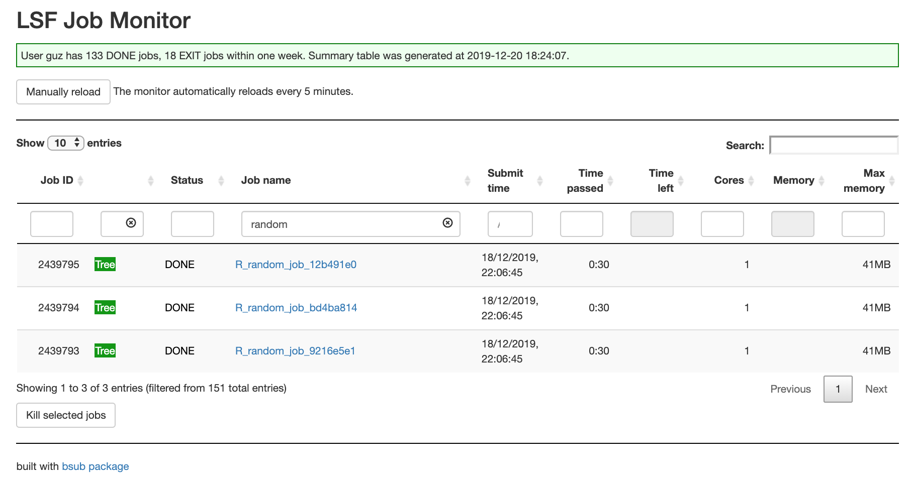
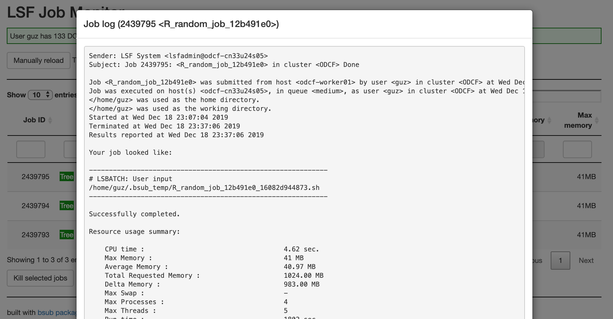
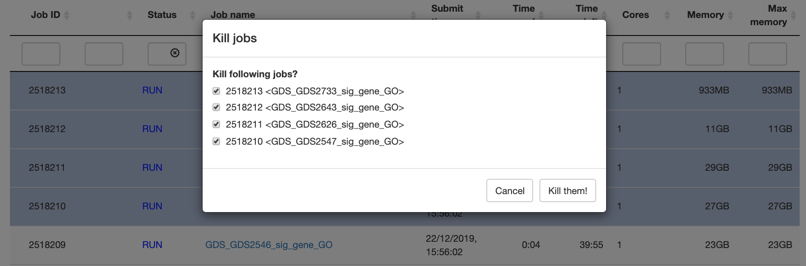

Author: Zuguang Gu ( z.gu@dkfz.de )
Date: 2020-05-30
Load the library:
library(bsub)
Note: you need to properly configure to use bsub package. Using bsub package on DKFZ ODCF cluster has already configured and is automatically loaded. For other institutes, please refer to configure_bsub_package.html.
We suggest to use bsub directly on the node that has the same file system as the computing nodes. If the file system is different from the computing nodes, you can only monitor jobs status while you cannot submit jobs.
bsub package can submit R code (by bsub_chunk()), R scripts (by bsub_script()) and bash commands (by bsub_cmd()) to the LSF cluster purely inside the R session. We suggest to save the output into permanent files in the jobs while not directly retrieving the results on the fly.
Send R code
bsub_chunk() submits the R chunk. The code chunk should be embraced by {...}. For example, NMF::nmf() normally takes very long time to run. We submit the NMF analysis to the cluster and save the results as an RDS file.
bsub_chunk(name = "example", memory = 10, hour = 10, core = 4, { fit = NMF::nmf(...) # you better save `fit` into a permanent file in an absolute path saveRDS(fit, file = "/path/to/fit.rds") })
In the following examples, we use Sys.sleep(5) to simulate a chunk of code which runs for a short time.
bsub_chunk( { Sys.sleep(5) })
## - job: 'R_code_c3481a47' from a code chunk
## bsub -J 'R_code_c3481a47' -W '1:00' -n 1 -R 'rusage[mem=1024]' \
## -o '/home/guz/.bsub_temp/R_code_c3481a47.out' \
## '/home/guz/.bsub_temp/R_code_c3481a47_c03680e7b34.sh'## [1] "3344195"The bsub_chunk() prints the bsub command and the value returned by bsub_chunk() is the job ID from LSF cluster.
Job settings
Set job name, memory, running time and number of cores:
bsub_chunk(name = "example", memory = 10, hour = 10, core = 4, { Sys.sleep(5) })
## - job: 'example' from a code chunk
## bsub -J 'example' -W '10:00' -n 4 -R 'rusage[mem=10240]' \
## -o '/home/guz/.bsub_temp/example.out' \
## '/home/guz/.bsub_temp/example_c036498b11cc.sh'## [1] "3344196"If name is not specified, an internal name calculated by digest::digest() on the chunk is automatically assigned. The unit of memory is GB.
Call Rscript
The R chunk is saved into a temporary R script and called by Rscript command when it is executed on the cluster. A lot of LSF clusters have customized installation of R, which means, calling Rscript is specific for every LSF cluster, thus, you need to configure how to call the Rscript command. By default, it simply calls Rscript with the default R version installed on the cluster.
To set Rscript calling with a specific version or in a specific path, you need to configure the bsub_opt$call_Rscript option. The value for bsub_opt$call_Rscript should be a user-defined function where the R version in the only argument. The default value for bsub_opt$call_Rscript is
function(version) "Rscript"
which ignores the R version. If you want to specify Rscritp with a specific path, you can set bsub_opt$call_Rscript as:
bsub_opt$call_Rscript = function(version) "/the/absolute/path/of/Rscript"
To make it more flexible, the R version can be used when setting how to call Rscript. By default, when installing R, R will installed into folder with the version name of e.g. /.../3.6/..., thus, if there are several R versions are installed on your cluster, you can set bsub_opt$call_Rscript as:
library(GetoptLong) bsub_opt$call_Rscript = function(version) { qq("/the/absolute/path/of/@{gsub('\\.\\d+$', '', version)}/Rscript") }
Here qq() is from GetoptLong package which does variable interpolation. You can use similar packages such as glue here.
Later, the R version can be easily switched by setting bsub_opt$R_version or the R_version argument in bsub_chunk() (The value of R_version is sent to call_Rscript function). E.g:
bsub_chunk(name = "example", R_version = "3.6.0", { Sys.sleep(5) })
Or set R_version as a global parameter:
bsub_opt$R_version = "3.6.0" bsub_chunk(name = "example", { Sys.sleep(5) })
On DKFZ ODCF cluster, software with different versions are managed by Environment Modules. bsub_opt$call_Rscript was set as follows:
function(version) { qq("module load gcc/7.2.0; module load java/1.8.0_131; module load R/@{version}; Rscript") }
The module loading for gcc/7.2.0 and java/1.8.0_131 ensures that R packages depending on specific C/Java libraries can be successfully loaded. So, if R_version is set to 4.0.0, the Rscript call would be
module load gcc/7.2.0; module load java/1.8.0_131; module load R/4.0.0; Rscriptwhich makes sure the Rscript from R-4.0.0 is used.
Similarlly, if you use conda for managing different versions of software, you can also choose R with different versions by setting a proper bsub_opt$call_Rscript. Let assume you have conda environments for different R versions with the name schema R_$version (e.g. R_3.6.0), then you can set bsub_opt$call_Rscript as:
bsub_opt$call_Rscript = function(version) { qq("conda activate R_@{version}; Rscript") }
Bash environment
In previous examples, we load the gcc/7.2.0 and java/1.8.0_131 modules, or activate the conda environment as parts of the command callling Rscript. These bash-level initialization can also be set by sh_head which adds shell commands as header in the bash script that is used for job submission. E.g., we can do the other way:
bsub_opt$call_Rscript = function(version) qq("module load R/@{version}; Rscript") bsub_chunk(name = "example", sh_head = c("module load gcc/7.2.0", "module load java/1.8.0_131"), { Sys.sleep(5) })
Or set sh_head as a global option:
bsub_opt$call_Rscript = function(version) qq("module load R/@{version}; Rscript") bsub_opt$sh_head = c("module load gcc/7.2.0", "module load java/1.8.0_131") bsub_chunk(name = "example", { Sys.sleep(5) })
One usage of this functionality is to load pandoc module if the rmarkdown is used in the code chunk (on DKFZ ODCF cluster):
bsub_chunk(name = "example", sh_head = "module load pandoc/2.2.1", { library(rmarkdown) render(...) })
Load other packages
The packages that are needed can be directly added in the code chunk:
bsub_chunk(name = "example", { library(package1) library(package2) Sys.sleep(5) })
Or assign by packages argument:
bsub_chunk(name = "example", packages = c("package1", "package2"), { Sys.sleep(5) })
Or set it as a global parameter:
bsub_opt$packages = c("package1", "package2") bsub_chunk(name = "example", { Sys.sleep(5) })
There is a special value _in_session_ for packages argument that loads all packages in the current R session.
library(foo) library(bar) bsub_chunk(name = "example", packages = "_in_session_", { Sys.sleep(5) })
Other R variables
The R variables that are defined outside the code chunk and need to be used inside the code chunk can by specified by variables argument:
foo = 1 bsub_chunk(name = "example", variables = "foo", { bar = foo Sys.sleep(5) })
variables argument has a special value _all_functions_ that loads all functions defined in the global environment.
f1 = function() 1 f2 = function() 2 bsub_chunk(name = "example", variables = "_all_functions_", { f1() f2() Sys.sleep(5) })
The workspace image
If you have too many external variables that are used in the code chunk or they are used in multiple jobs, you can directly save the workspace or the objects as an image and specify the image argument:
save.image(file = "/path/foo.RData") # or # save(var1, var2, ..., file = "...") bsub_chunk(name = "example", image = "/path/foo.RData", { ... Sys.sleep(5) })
Or set the image file as a global parameter:
save.image(file = "/path/foo.RData") bsub_opt$image = "/path/foo.RData" bsub_chunk(name = "example", { ... Sys.sleep(5) })
Absolute paths should be used instead of relative paths.
Please note, image files can be shared between different jobs and they are not deleted after all the jobs are finished, as a comparison, variables are saved into separated temporary files for different jobs even when the variable names are the same, and they are deleted after the jobs are finished.
The working directory
If the code chunk replies on the working directory, it can be specified by working_dir argument:
bsub_chunk(name = "example", working_dir = "/path"
{
Sys.sleep(5)
})Or set it as a global parameter:
bsub_opt$working_dir = "/path" bsub_chunk(name = "example", { Sys.sleep(5) })
Note it is not recommended to let all file pathes in the jobs be relative or be affected by the working directory. It is recommended to use absolute path everywhere in the job.
Retrieve the last variable
The last variable in the code chunk can be saved by setting save_var = TRUE and retrieved back by retrieve_var() by specifying the job name. Since the variable is looked up by the job name, there should be no job with the same name submitted before retrieving the variable, or else it will only look at the newest one with the same job name.
retrieve_var() waits until the job is finished.
bsub_chunk(name = "example2", save_var = TRUE, { Sys.sleep(10) 1+1 })
## - job: 'example2' from a code chunk
## bsub -J 'example2' -W '1:00' -n 1 -R 'rusage[mem=1024]' \
## -o '/home/guz/.bsub_temp/example2.out' \
## '/home/guz/.bsub_temp/example2_c0365af3a46f.sh'## [1] "3344197"retrieve_var("example2")
## job is running or pending, retry in 30 seconds.## [1] 2However, it is not recommended to directly retrieve the returned value from the code chunk. Better choice is to save the variable into permanent file in the code chunk so you don’t need to rerun the code in the future which normally has very long runing time, E.g.:
bsub_chunk(name = "example", { ... save(...) # or saveRDS(...) })
Rerun the job
There is a flag file to mark whether the job was successfully finished or not. If the job has been successfully done, the job with the same name will be skipped. enforce argument controls how to rerun the jobs with the same names. If it is set to TRUE, jobs will be rerun no matter they are done or not.
bsub_chunk(name = "example", enforce = FALSE, { Sys.sleep(5) })
## - job: 'example' from a code chunk
## Job 'example' is already done, skip.enforce can be set as a global parameter:
bsub_opt$enforce = FALSE bsub_chunk(name = "example", { Sys.sleep(5) })
Job dependency
Since bsub_chunk() returns the job ID, it is can be used to specify the dependency in other jobs. The value for dependency can be a vector of job IDs.
job1 = bsub_chunk(name = "example1", { Sys.sleep(5) }) bsub_chunk(name = "example2", dependency = job1, { Sys.sleep(5) })
Temporary and output directory
bsub_chunk() has two arguments temp_dir and output_dir. temp_dir is used for the temporary R script and sh files. output_dir is used for the flag files and the output files from LSF cluster.
bsub_chunk(name = "example", temp_dir = ..., output_dir = ..., { Sys.sleep(5) })
They can be set as global parameters. The value of output_dir is by default set as the same as temp_dir.
bsub_opt$temp_dir = ... bsub_opt$output_dir = ... bsub_chunk(name = "example", { Sys.sleep(5) })
To remove temporary files in temp_dir, run clear_temp_dir() function.
Run code chunk from a script
You can run code chunk from a script by specifying the starting line number and the ending line number. The R script is specified by script argument, the starting line number and the ending line number are specified by start and end arguments. (Note this functionality has not been tested yet.)
bsub_chunk(name = "example", script = "/path/foo.R", start = 10, end = 20, ...)
Assuming you are editing foo.R very offen and the line numbers that you want to run change from time to time, you can add tags in the R script and specifying start and end by those tags. In following example which is the source code of foo.R, we add tags for the code chunk we want to run:
... # BSUB_START you code chunk here # BSUB_END ...
Then you can specify start and end by regular expressions to match them:
bsub_chunk(name = "example", script = "/path/foo.R", start = "^# BSUB_START", end = "^# BSUB_END", ...)
Run jobs locally
Setting local = TRUE directly runs the code chunk in the same R session (do not submit to the cluster).
bsub_chunk(name = "example", local = TRUE, { cat("blablabla...\n") })
## - job: 'example' from a code chunk
## bash /home/guz/.bsub_temp/example_c036255d2ebe.shSubmit jobs over different parameters
The nice thing for bsub package is you can programmatically submit many of jobs. Assuming we have a list of samples where the sample IDs are saved in sample_id variable, and a list of parameters (in parameters variable) to test, we want to apply the analysis by analyze() function to each sample with each parameter per single job. We can submit all the jobs as follows:
Send R script
bsub_script() submits the job from R scripts. The major arguments are the same as in bsub_chunk().
bsub_script("/path/of/foo.R", name = ..., memory = ..., core = ..., ...)
If the R script needs command-line arguments, they can be specified by argv.
bsub_script("/path/of/foo.R", argv = "--a 1 --b 3", ...)
When you have a list of jobs with the same argument names but with different argument values, you can construct argv by glue::glue() or GetoptLong::qq() to construct the argv string:
library(GetoptLong) for(a in 1:10) { for(b in 11:20) { bsub_script("/path/foo.R", argv = qq("-a @{a} --b @{b}"), ...) } }
The command-line arguments of your R script can also specified as arguments of bsub_script(), but with . prefix.
bsub_script("/path/foo.R", .a = 1, .b = 3, ...)
Then for the same example previously for submitting a list of jobs, it can be written as:
for(a in 1:10) { for(b in 11:20) { bsub_script("/path/foo.R", .a = a, .b = b, ...) } }
The R scripts should be used in the absolute paths.
Note the bash environment can be initialized by setting the sh_head option.
Send other shell commands
bsub_cmd()submits shell commands. Basically it is similar as bsub_script():
bsub_cmd("samtools sort ...", name = ..., memory = ..., core = ..., ...) bsub_cmd(c("cmd1", "cmd2", ...), name = ..., memory = ..., core = ..., ...)
The binary and the arguments should all be set in the first argument of bsub_cmd(). Remember to use glue::glue() or GetoptLong::qq() to construct the commands if they contain variable arguments, e.g:
Job Summary
bjobs() or just entering bjobs gives a summary of running and pending jobs. Job status (by default is RUN and PEND) is controlled by status argument. Number of most recent jobs is controlled by max argument. Filtering on the job name is controlled by filter argument. In the following example, we submit four tiny jobs.
for(i in 1:4) { bsub_chunk(name = paste0("example_", i), { Sys.sleep(5) }) }
## - job: 'example_1' from a code chunk
## bsub -J 'example_1' -W '1:00' -n 1 -R 'rusage[mem=1024]' \
## -o '/home/guz/.bsub_temp/example_1.out' \
## '/home/guz/.bsub_temp/example_1_c0366678c6a9.sh'
## - job: 'example_2' from a code chunk
## bsub -J 'example_2' -W '1:00' -n 1 -R 'rusage[mem=1024]' \
## -o '/home/guz/.bsub_temp/example_2.out' \
## '/home/guz/.bsub_temp/example_2_c03627989693.sh'
## - job: 'example_3' from a code chunk
## bsub -J 'example_3' -W '1:00' -n 1 -R 'rusage[mem=1024]' \
## -o '/home/guz/.bsub_temp/example_3.out' \
## '/home/guz/.bsub_temp/example_3_c036e84fe13.sh'
## - job: 'example_4' from a code chunk
## bsub -J 'example_4' -W '1:00' -n 1 -R 'rusage[mem=1024]' \
## -o '/home/guz/.bsub_temp/example_4.out' \
## '/home/guz/.bsub_temp/example_4_c03659d700dd.sh'bjobs## ───────────────────────────────────────────────────────────────────────────────────
## JOBID STAT JOB_NAME SUBMIT_TIME TIME_PASSED TIME_LEFT SLOTS MEM MAX_MEM
## 3344221 PEND example_1 2020-05-30 19:43:54 - - - - -
## 3344222 PEND example_2 2020-05-30 19:43:55 - - - - -
## 3344223 PEND example_3 2020-05-30 19:43:55 - - - - -
## 3344224 PEND example_4 2020-05-30 19:43:55 - - - - -
## ───────────────────────────────────────────────────────────────────────────────────
## 64 DONE jobs, 10 EXIT jobs, 4 PEND jobs within one week.
## You can have more controls by `bjobs(status = ..., max = ..., filter = ...)`.There is one additional column RECENT in the summary table which shows the order of the jobs with the same job name. The most recent job has the value 1.
for(i in 1:2) { bsub_chunk(name = "example", { Sys.sleep(5) }) }
## - job: 'example' from a code chunk
## bsub -J 'example' -W '1:00' -n 1 -R 'rusage[mem=1024]' \
## -o '/home/guz/.bsub_temp/example.out' \
## '/home/guz/.bsub_temp/example_c0363a31bcfc.sh'
## - job: 'example' from a code chunk
## bsub -J 'example' -W '1:00' -n 1 -R 'rusage[mem=1024]' \
## -o '/home/guz/.bsub_temp/example.out' \
## '/home/guz/.bsub_temp/example_c036327519c6.sh'bjobs(status = "all", filter = "example")
## ──────────────────────────────────────────────────────────────────────────────────────────
## JOBID STAT JOB_NAME RECENT SUBMIT_TIME TIME_PASSED TIME_LEFT SLOTS MEM MAX_MEM
## 3340294 DONE example 7 2020-05-28 23:09:59 0:00 - 4 - 34Mb
## 3340295 DONE example2 3 2020-05-28 23:10:00 0:00 - 1 - 41Mb
## 3340296 DONE example_1 3 2020-05-28 23:10:42 0:00 - 1 - 41Mb
## 3340297 DONE example_2 3 2020-05-28 23:10:42 0:00 - 1 - 41Mb
## 3340298 DONE example_3 3 2020-05-28 23:10:42 0:00 - 1 - 41Mb
## 3340299 DONE example_4 3 2020-05-28 23:10:43 0:00 - 1 - 41Mb
## 3343844 DONE example 6 2020-05-30 13:29:07 0:00 - 4 - 12Mb
## 3343845 DONE example2 2 2020-05-30 13:29:08 0:00 - 1 - 41Mb
## 3343846 DONE example_1 2 2020-05-30 13:29:49 0:00 - 1 - 41Mb
## 3343847 DONE example_2 2 2020-05-30 13:29:49 0:00 - 1 - 41Mb
## 3343848 DONE example_3 2 2020-05-30 13:29:49 0:00 - 1 - 41Mb
## 3343849 DONE example_4 2 2020-05-30 13:29:50 0:00 - 1 - 41Mb
## 3343850 DONE example 5 2020-05-30 13:29:50 0:00 - 1 - 41Mb
## 3343851 DONE example 4 2020-05-30 13:29:50 0:00 - 1 - 41Mb
## 3344196 DONE example 3 2020-05-30 19:43:13 0:00 - 4 - 37Mb
## 3344197 DONE example2 1 2020-05-30 19:43:13 0:00 - 1 - 41Mb
## 3344221 RUN example_1 1 2020-05-30 19:43:54 0:00 0:59 1 0Mb -
## 3344222 RUN example_2 1 2020-05-30 19:43:55 0:00 0:59 1 0Mb -
## 3344223 PEND example_3 1 2020-05-30 19:43:55 - - - - -
## 3344224 PEND example_4 1 2020-05-30 19:43:55 - - - - -
## 3344225 PEND example 2 2020-05-30 19:43:55 - - - - -
## 3344226 PEND example 1 2020-05-30 19:43:56 - - - - -
## JOBID STAT JOB_NAME RECENT SUBMIT_TIME TIME_PASSED TIME_LEFT SLOTS MEM MAX_MEM
## ──────────────────────────────────────────────────────────────────────────────────────────
## 64 DONE jobs, 10 EXIT jobs, 4 PEND jobs, 2 RUN jobs within one week.
## You can have more controls by `bjobs(status = ..., max = ..., filter = ...)`.brecent() by default returns 20 most recent jobs of “all” status. You can simply type brecent without the brackets.
brecent## ────────────────────────────────────────────────────────────────────────────────────────────────
## JOBID STAT JOB_NAME RECENT SUBMIT_TIME TIME_PASSED TIME_LEFT SLOTS MEM MAX_MEM
## 3343845 DONE example2 2 2020-05-30 13:29:08 0:00 - 1 - 41Mb
## 3343846 DONE example_1 2 2020-05-30 13:29:49 0:00 - 1 - 41Mb
## 3343847 DONE example_2 2 2020-05-30 13:29:49 0:00 - 1 - 41Mb
## 3343848 DONE example_3 2 2020-05-30 13:29:49 0:00 - 1 - 41Mb
## 3343849 DONE example_4 2 2020-05-30 13:29:50 0:00 - 1 - 41Mb
## 3343850 DONE example 5 2020-05-30 13:29:50 0:00 - 1 - 41Mb
## 3343851 DONE example 4 2020-05-30 13:29:50 0:00 - 1 - 41Mb
## 3344191 EXIT job1 4 2020-05-30 18:26:40 0:00 - 1 - 6Mb
## 3344192 EXIT job1 3 2020-05-30 18:27:48 0:00 - 1 - 7Mb
## 3344193 EXIT job1 2 2020-05-30 19:38:59 0:00 - 1 - 1Mb
## 3344194 DONE job1 1 2020-05-30 19:41:48 0:00 - 1 - 41Mb
## 3344195 DONE R_code_c3481a47 1 2020-05-30 19:43:12 0:00 - 1 - 37Mb
## 3344196 DONE example 3 2020-05-30 19:43:13 0:00 - 4 - 37Mb
## 3344197 DONE example2 1 2020-05-30 19:43:13 0:00 - 1 - 41Mb
## 3344221 RUN example_1 1 2020-05-30 19:43:54 0:00 0:59 1 0Mb -
## 3344222 RUN example_2 1 2020-05-30 19:43:55 0:00 0:59 1 0Mb -
## 3344223 PEND example_3 1 2020-05-30 19:43:55 - - - - -
## 3344224 PEND example_4 1 2020-05-30 19:43:55 - - - - -
## 3344225 PEND example 2 2020-05-30 19:43:55 - - - - -
## 3344226 PEND example 1 2020-05-30 19:43:56 - - - - -
## ────────────────────────────────────────────────────────────────────────────────────────────────
## 64 DONE jobs, 10 EXIT jobs, 4 PEND jobs, 2 RUN jobs within one week.
## You can have more controls by `bjobs(status = ..., max = ..., filter = ...)`.There are some helper functions which only list running/pending/done/failed jobs:
bjobs_runningbjobs_pendingbjobs_donebjobs_exit
Other functions
-
bkill(job_id)kills a job or a list jobs. -
job_log(job_id)prints the log of a specified running/finished/failed job. A vector of jobs can also be sent at the same time that last 10 lines of each job are printed. -
check_dump_files()searches the dump files (core.xxxby LSF cluster or.RDataTmpxxxby R). -
ssh_connect()establishes the SSH connection to the submission node if it is lost.
Global Parameters
Type bsub_opt gives you a list of global options. Values can be set by in a form of bsub_opt$opt = value. All the values can be reset by bsub_opt(RESET = TRUE).
bsub_opt## Option Value
## ---------------:---------------------------------------------------------------
## packages NULL
## image NULL
## temp_dir ~/.bsub_temp
## output_dir ~/.bsub_temp
## enforce TRUE
## R_version 3.6.0
## working_dir ""
## wd ""
## ignore FALSE
## local FALSE
## call_Rscript a user-defined function
## submission_node odcf-worker01, odcf-cn34u03s10, odcf-cn34u03s12
## login_node odcf-worker01, odcf-cn34u03s10, odcf-cn34u03s12
## sh_head ""
## user guz
## group NULL
## ssh_envir source /etc/profile, export LSF_ENVDIR=/opt/lsf/conf, export LSF_SERVERDIR=/opt/lsf/10.1/linux3.10-glibc2.17-x86_64/etc
## bsub_template a user-defined function
## parse_time NULL
## verbose FALSEOr a more readable text:
bconf## Configurations for bsub:
## * user for connecting submission node: guz
## * submission node: odcf-worker01, odcf-cn34u03s10, odcf-cn34u03s12
## * global R version: 3.6.0
## * command to call `Rscript`:
## qq("module load gcc/7.2.0; module load java/1.8.0_131; module load R/@{version}; Rscript") foo.R
## * temporary directory: ~/.bsub_temp
##
## Configurations can be modified by `bsub_opt()` functionInteractive job monitor
Simply running monitor() opens a shiny app where you can query and manage jobs.
monitor()Following are examples of the job monitor.
The job summary table:

Job log:

Job dependency tree:

Kill jobs:

Session Info
## R version 3.6.0 (2019-04-26)
## Platform: x86_64-pc-linux-gnu (64-bit)
## Running under: CentOS Linux 7 (Core)
##
## Matrix products: default
## BLAS: /usr/lib64/libblas.so.3.4.2
## LAPACK: /usr/lib64/liblapack.so.3.4.2
##
## locale:
## [1] LC_CTYPE=en_GB.UTF-8 LC_NUMERIC=C
## [3] LC_TIME=en_GB.UTF-8 LC_COLLATE=C
## [5] LC_MONETARY=en_GB.UTF-8 LC_MESSAGES=en_GB.UTF-8
## [7] LC_PAPER=en_GB.UTF-8 LC_NAME=C
## [9] LC_ADDRESS=C LC_TELEPHONE=C
## [11] LC_MEASUREMENT=en_GB.UTF-8 LC_IDENTIFICATION=C
##
## attached base packages:
## [1] stats graphics grDevices utils datasets methods base
##
## other attached packages:
## [1] GetoptLong_0.1.8 bsub_1.0.0 knitr_1.28
##
## loaded via a namespace (and not attached):
## [1] Rcpp_1.0.4 clisymbols_1.2.0 digest_0.6.25
## [4] crayon_1.3.4 magrittr_1.5 evaluate_0.14
## [7] rlang_0.4.5 stringi_1.4.6 GlobalOptions_0.1.3
## [10] rmarkdown_1.18 rjson_0.2.20 tools_3.6.0
## [13] stringr_1.4.0 xfun_0.13 yaml_2.2.1
## [16] compiler_3.6.0 htmltools_0.4.0